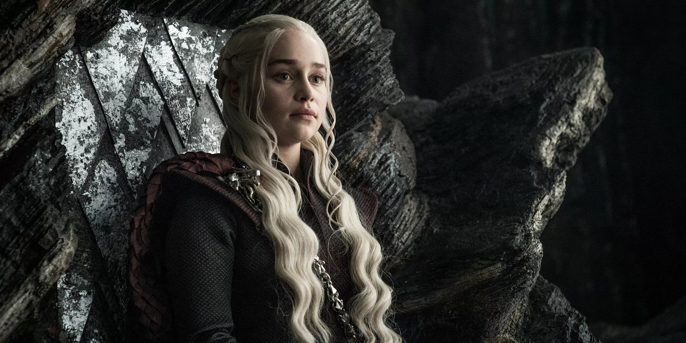

Daenerys Targaryen
Daenerys Targaryen é uma das personagens centrais de Game of Thrones, conhecida por sua determinação em retomar o trono de ferro e libertar os escravos de Essos. Ela é filha do Rei Louco, Aerys II Targaryen, e irmã de Viserys Targaryen, e desempenha um papel crucial na luta pelo controle dos Sete Reinos.
Origens e Família
Detalhes sobre a origem de Daenerys, sua relação com a família Targaryen, e como isso afeta sua identidade e as dinâmicas de poder em Westeros.
Contribuições e Batalhas
Discussão sobre os principais eventos e batalhas em que Daenerys Targaryen teve papel crucial, incluindo a libertação de Astapor, Yunkai e Meereen, e a Batalha de Winterfell.
Legado
Exploração do impacto de Daenerys Targaryen na conclusão da série e seu legado em Westeros após o fim de Game of Thrones.